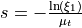
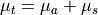
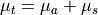
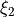
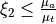
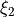
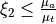
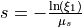
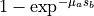
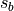

Simulator options¶
Simulator options are used to customize the OpenCL kernel. All kernel
options are derived from the xopto.mcbase.mcoptions.McOption class.
The boolean options are implemented
by subclassing McBoolOption,
the integer options
by subclassing McIntOption,
the floating-point
options by subclassing McFloatOption and
the data type options
by subclassing McTypeOption.
The xopto.mcbase.mcoptions is also conveniently imported into the
xopto.mcvox.mc and xopto.mcvox.mcoptions modules.
The list of available options is as follows:
McMethod(default isalbedo_weight) - can be used to set the Monte Carlo method. A detailed description of the methods can be found in:A. Sassaroli and F. Martelli, Equivalence of four Monte Carlo methods for photon migration in turbid media, J Opt Soc Am A Opt Image Sci Vis, 29 (10), 2110-2117 (2012), https://doi.org/10.1364/JOSAA.29.002110.
Three different photon packet stepping methods are available:
Albedo Rejection (
albedo_rejectionorar)Propagation step  is derived from a uniform random number from interval
![[0, 1]](../../_images/math/8027137b3073a7f5ca4e45ba2d030dcff154eca4.png) and the total attenuation coefficient
, which is the sum of the absorption
and the total attenuation coefficient
, which is the sum of the absorption
 and scattering coefficients
and scattering coefficients  .
The packet is fully absorbed if no boundaries are
hit along the step
.
The packet is fully absorbed if no boundaries are
hit along the step  and a uniform random number
 from fulfils
. If the
packet hits a geometry boundary, it is propagated up to the boundary,
where the boundary interactions are processed and a new propagation
step is started afterwards.
and a uniform random number
 from fulfils
. If the
packet hits a geometry boundary, it is propagated up to the boundary,
where the boundary interactions are processed and a new propagation
step is started afterwards.Albedo weight (
albedo_weightoraw)Propagation step is derived from a uniform random number from interval
and the total attenuation coefficient
, which is the sum of the absorption
and scattering coefficients .
The packet is scattered and partially absorbed if no boundaries are
hit along the step . The fraction of the absorbed
weight is computed as . If the
packet hits a geometry boundary, it is propagated up to the boundary,
where the boundary interactions are processed and a new propagation
step is started afterwards.Microscopic Beer-Lambert (
microscopic_beer_lambertormbl)Propagation step  is derived from a uniform random number from interval
and the scattering coefficient .
The packet is absorbed according to the traveled path regardless
if a boundary is hit along the step. If the packet hits a geometry
boundary, it is propagated up to the boundary, where the boundary
interactions are processed and a new propagation step is
started afterwards. The fraction of the absorbed
weight is computed as , where
 is the distance along the current propagation direction
to the nearest boundary or the full step if no boundaries are hit.
The Albedo Rejection implementation of the Monte Carlo method is the fastest but produces the noisiest results, since only the full energy of the photon packet is deposited or collected by the detectors.
The Microscopic Beer-Lambert method produces the best quality fluence or Energy Deposition simulations if the size of the voxels in the deposition / fluence grid is smaller than the mean free path of the packets, i.e. there is on average less than one absorption event per traversal of a fluence voxel.
The default Albedo Weight method is recommended for reflectance simulations. It also matches the energy deposition performance of the Microscopic Beer-Lambert method if the mean free path is equal or smaller than the voxel size of the deposition / fluence grid, i.e. there is on average at least one deposition event per voxel traversal.
McUseFluenceCache(default isoff) - can be used to enable software cache for the fluence accumulator. Fluence cache will improve performance for configuration of deposition voxels, where there is a high likelihood that consecutive weight depositions will go into the same fluence accumulator or where the global memory bandwidth presents the main performance limiting factor.McUseNativeMath(default isoff) - can be used to enable half-precision math functions. Half-precision usually gives some performance benefit, but at a significantly reduced precision. Use this option with care! The half-precision math and native mathMcUseNativeMathoptions are mutually excluding. Ony one of the two options can be enabled at any given time. If both options are enabled, the native math option takes precedence.McUseHalfMath(default isoff) - can be used to enable device-native math functions. Native math usually gives some performance benefit, but might not be fully compliant with precisions defined by the IEEE standards. The half-precision mathMcUseHalfMathand native math options are mutually excluding. Ony one of the two options can be enabled at any given time. If both options are enabled, the native math option takes precedence.McMaterialMemory(default isglobal_mem) - OpenCL memory type used to store the array of materials. Selectingconstant_memmemory will likely lead to a performance boost, in particular on older GPUs. However, note that the amount of available constant (constant_mem) memory on GPUs is typically limited to about 64k. The constant memory is also used to hold some performance-critical simulator data and can be also used to hold lookup table data of integer or floating-point type.McIntLutMemory(default isconstant_mem) - OpenCL memory type used to hold the integer type lookup table data. Selectingglobal_memmemory will likely lead to a significant performance degradation, in particular on older GPUs. Note that the amount of available “constant_mem” memory on GPUs is typically limited to about 64k.McFloatLutMemory(default isconstant_mem) - OpenCL memory type used to hold the floating-point type lookup table data. Selectingglobal_memmemory will likely lead to a significant performance degradation, in particular on older GPUs. Note that the amount of available “constant_mem” memory on GPUs is typically limited to about 64 kB.McUseEnhancedRng(default isoff) - The enhanced version of random number generator is required when performing simulations in large scattering volumes, were the number of scattering events is expected to be on the order of millions. Depending on the OpenCL device, there might be a small performance cost of about 20%, which is the reason for disabling this option by default. If this option is turned onon, the Monte Carlo simulator will use the enhanced version of the random number generator.McDebugMode(default isoff) - Can be used to enable kernel debug mode that will print information to the console output. Note that this mode requires printf functionality in the OpenCL kernel that might not be supported by all OpenCL devices. If this mode is turned onon, run the Monte Carlo simulator with one or a small number of photon packets.McUseSoft64Atomics(default isoff) - Can be used to force software implementation of 64-bit atomic operations.McUseLottery(default ison) - Can be used to disable termination of photon packets through lottery.McMinimumPacketWeight(default is 10 -4) - Sets the minimum photon packet weight allowed before starting packet termination or lottery.McPacketLotteryChance(default is 0.1) - Terminate photon packet by lottery if the value of a uniform random number from [0, 1] exceeds this value.McUsePackedStructures(default isoff) - Can be used to force tightly packed structures in the OpenCL code. Note that packed structures can lead to significant performance degradation of the Monte Carlo kernel. This option is the last resort if the fields of the OpenCL and host structures cannot be properly aligned. When declaring OPenCL or host structures always start with the largest data type and move towards smaller data types. Use data types that are of size no less than 4 bytes.McUseEvents(default isoff) - Can be used to enable tracking of packet events such as launch, absorption, scattering, reflection, refraction and termination. This option is useful for implementing custom packet trace filters.